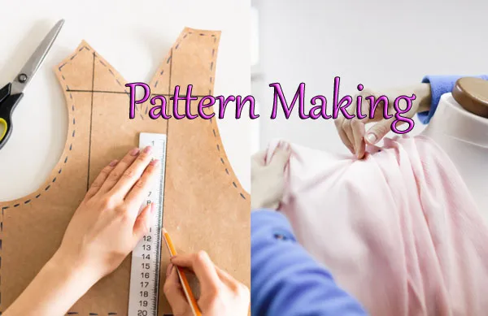
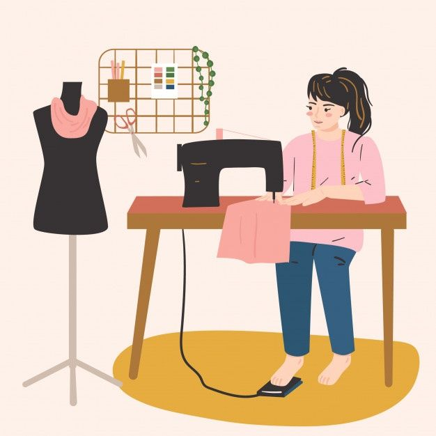

Courses
Pattern making is the process of creating templates or patterns that are used to cut fabric pieces for garments. It involves drafting, draping, and altering patterns to fit the human body accurately.
Techniques
1. Flat Pattern Making
2. Draping
3. Digital Pattern Making

Sewing techniques encompass the various methods and skills required to stitch fabric pieces together to create garments and accessories. Mastery of these techniques is fundamental for constructing durable and aesthetically pleasing items.
Techniques
1. Hand Sewing
2. Seam Finishes
3. Decorative Stitches

Textile manipulation involves altering the surface and structure of fabrics to create unique textures, patterns, and forms. This can be done through various techniques that add artistic and functional value to the fabric.
Techniques
1. Fabric Dyeing
2. Fabric Printing
3. Surface Embellishment